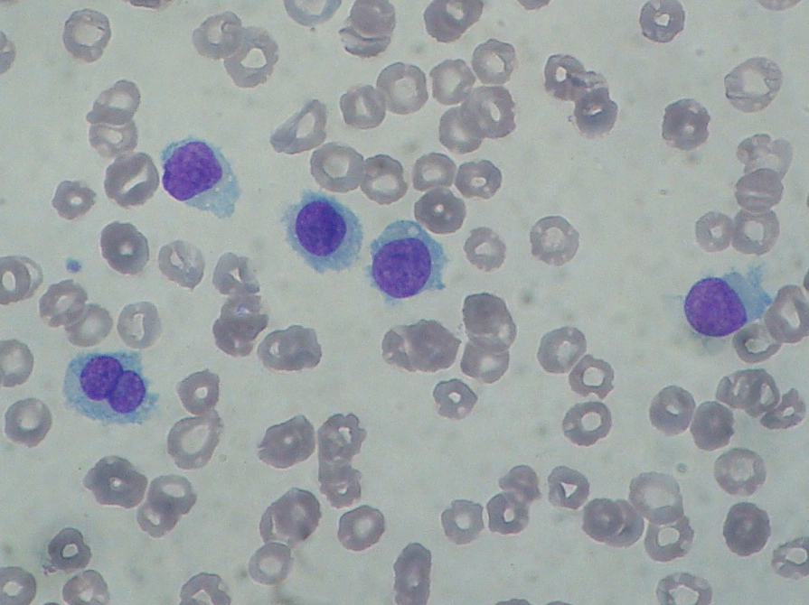

疾病 血液
Hairy Cell Leukemia ｜ 毛細胞白血病 · Hairy Cell Leukemia 筆記更新 2026-07-26· 整理狀態：可用
加入閱讀清單 其他名稱 3 HCL · 毛細胞白血病 · Hairy Cell Leukemia
一句話總覽
少見但「考點很高產」的慢性 B 細胞白血病：細胞有毛狀突起 ，幾乎全部帶 BRAF V600E 。臨床是巨脾 ＋ 全血細胞減少 ＋ 骨髓乾抽 ，淋巴結腫大反而不突出。對 purine analog 反應極佳，多數可長期緩解。
30 秒行動卡
診斷關鍵 ：巨脾 ＋ 全血球低下 ＋ 單核球缺乏 ＋ 骨髓乾抽 → 驗流式 CD11c/CD25/CD103/CD123 與 BRAF V600E
治療骨架 ：有症狀才治；一線 Cladribine↗ Rituximab↗
絕對不可 ：無立即致死型禁忌（見下）
定義與定位
項目
重點
本質
成熟 B 細胞來源的惰性 慢性白血病，主要占據脾紅髓與骨髓
好發族群
中老年、男性居多 ；相對少見
分類位置
成熟 B · 惰性；見 Hema Category
為何獨立成篇
主表未收，但「脾腫大＋全血球低下 」的鑑別在考試與臨床極常用
病因與機制
flowchart TD
A["BRAF V600E 突變"] --> B["MAPK 訊號持續活化"]
B --> C["毛細胞浸潤<br/>脾紅髓與骨髓"]
C --> D["巨脾<br/>脾內血球被扣留"]
C --> E["分泌纖維化因子<br/>骨髓網狀纖維增生"]
E --> F["抽不出骨髓液<br/>乾抽 dry tap"]
D --> G["全血細胞減少<br/>含單核球缺乏"]
classDef key fill:#263238,stroke:#000,color:#fff,font-weight:bold
class G key
筆記中的流程與關係 一條線推出全部處置
病灶集中在脾與骨髓 、不在淋巴結 → 所以看到的是脾大與血球低下，而不是淋巴結腫大；纖維化 → 所以乾抽 ，診斷要靠骨髓切片而非抽吸 ；驅動點單一（BRAF）→ 所以標靶與 purine analog 都能打得很準。

多顆異常 B cell 有圓形／腎形核、疏鬆染色質與較豐富淡藍胞質；胞質邊緣向四周伸出細長、不規則的毛狀突起，是 hairy cell 的辨識點。Source: Wikimedia Commons — Hairy cell leukemia smear , Paulo Henrique Orlandi Mourao（CC BY-SA 3.0）。
臨床表現
典型 ：巨脾 造成的腹脹或左上腹不適；疲倦、易感染、出血傾向提示性 ：全血細胞減少 ，且**單核球缺乏（monocytopenia）**是經典線索；淋巴結腫大不突出 少見但重要 ：因單核球與嗜中性球雙低，可有非典型分枝桿菌等機會性感染
→ 相關主訴流程：Splenomegaly↗ 、Pancytopenia↗
診斷
診斷條件
內容
形態
圓核、豐富胞質、hair-like projections
免疫表型
CD20 強陽性 ，加上 CD11c、CD25、CD103、CD123
基因
BRAF V600E
組織化學
TRAP+ （傳統教學點）
骨髓
常乾抽 （網狀纖維增生）→ 必須做切片 ，不能只靠抽吸
要開的檢查 ：CBC with differential↗ 、Peripheral blood smear↗ 、Flow cytometry↗ 、Bone marrow biopsy↗
鑑別診斷
要排除的
支持它的線索
怎麼排除
HCL-variant （🆕 HAEM5 已廢除此名，併入 SBLPN ）白血球常升高、CD25− 、BRAF 陰性 ，對 purine analog 反應差
BRAF 與 CD25
脾邊緣帶淋巴瘤（SMZL）
也有脾大，但無毛細胞表型、單核球不缺
CD103/CD25、BRAF
CLL-SLL CD5+ CD23+ 、淋巴球明顯增多、smudge cell流式表型
MDS 全血球低下但無巨脾；骨髓可抽出、有異常增生
骨髓切片與形態
治療
情境
處置
無症狀、血象尚可
觀察等待 ——不需立即治療
治療時機
有症狀性脾腫大、明顯血球低下、反覆感染
第一線
purine analog ：Cladribine↗ 或 pentostatin，± Rituximab↗
復發／難治
BRAF 抑制劑 （vemurafenib 等）± 其他標靶
支持性
治療期間嚴防感染；深度骨髓抑制期需嚴密照護
併發症與預後
要盯的併發症 ：Febrile neutropenia↗ 、機會性感染（purine analog 造成長期淋巴球低下）、脾腫大相關的血球扣留預後 ：一線治療反應率很高，多數可獲長期緩解；復發仍可再治療追蹤重點 ：血球回升情形與感染事件
禁忌與陷阱
常見錯誤
骨髓乾抽 就當「抽失敗」重抽——乾抽本身就是線索，該做的是切片 。
看到全血球低下只想 MDS 或再生不良性貧血，漏掉脾腫大這條線 。
忽略單核球缺乏 ——這是少數幾個會特別提示 HCL 的血球異常。
把 HCL-variant （HAEM5 新名 SBLPN ）當經典型治療：它 BRAF 陰性、CD25 陰性，purine analog 效果差。
相關連結
SOURCE & CONTEXT
來源與原始筆記 依 [[Hema Category]] 展開；WHO HAEM5（2022）
下載這篇 Markdown ↗ 網站保留原筆記的內容與整理狀態。